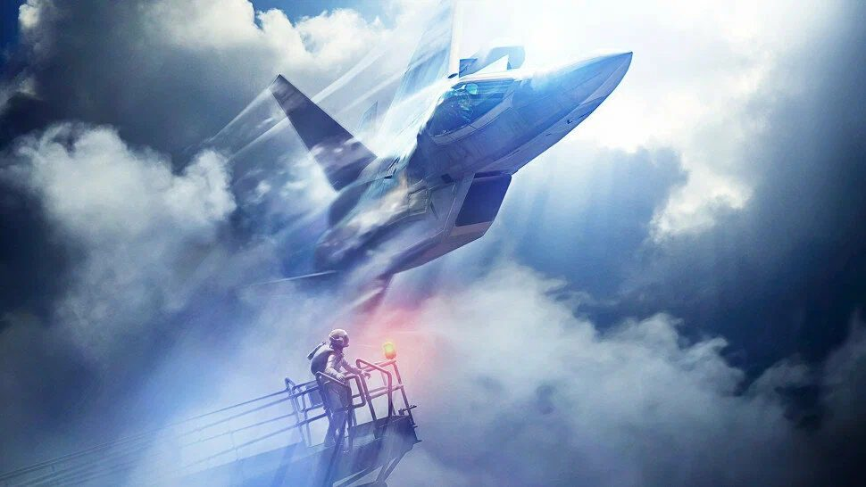
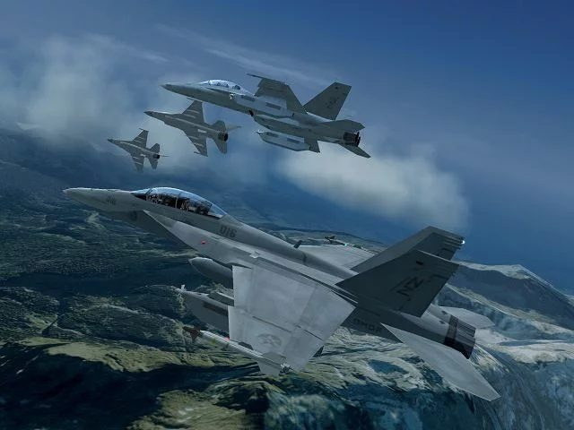
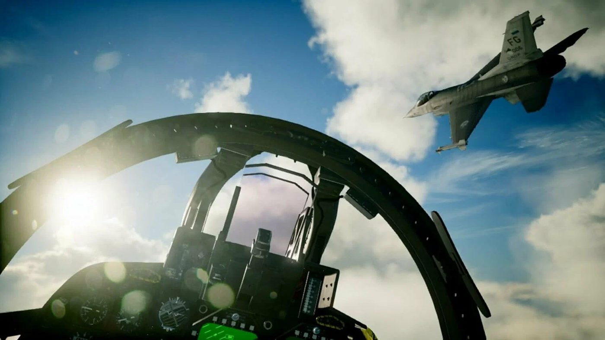

Ace Combat: красота, которая убивает

Ace Combat — серия аркадных авиасимуляторов от Bandai Namco, которая в 2025 году отметила тридцатилетие. Управление здесь простое, ракет на борту десятки, а самолёты настоящие — от F-14 до Су-57. Но за аркадной оболочкой скрывается то, за что серию любят по-настоящему: мир со своей историей и неожиданно серьёзный разговор о войне.
Strangereal: выдуманный мир с настоящими самолётами

Действие почти всех частей происходит в мире, который фанаты называют Strangereal. Здесь другие материки и страны — Осея, Эрузея, Белка, Юктобания, — но самолёты, ракеты и авианосцы взяты из реальности. Части связаны между собой: события одной игры становятся историей для следующей, и из отдельных войн складывается хроника целого мира.
Главные злодеи Strangereal — даже не армии, а сверхоружие: гигантские рельсовые пушки, летающие авианосцы, орбитальные установки. А главные герои — асы. Их знают по позывным, о них слагают легенды, их боятся противники. Игрок почти всегда молчит: история рассказывается через переговоры в эфире, брифинги и голоса людей на земле.
Посыл: красота и смерть в одном кадре

Ace Combat любуется самолётами так, как это умеют немногие игры. Солнце бликует на фонаре кабины, облака обволакивают крыло, инверсионные следы рисуют в небе петли — в такие моменты понимаешь, почему люди влюбляются в авиацию. Но серия никогда не даёт забыть, для чего построена каждая из этих машин.
Каждая сбитая цель — это человек. Противники переговариваются в эфире, у них есть имена и причины воевать. В Ace Combat 04 война показана глазами мальчика из оккупированного города, для которого вражеский ас — почти семья. В Ace Combat Zero о легендарном пилоте рассказывают те, кого он сбивал, и к финалу титул «аса» звучит уже не как комплимент. А Белка, проигрывая войну, взрывает ядерные заряды на собственной территории — и этот след тянется через несколько игр.
Самолёт может быть самой красивой машиной из созданных человеком — и при этом оставаться оружием.
В этом и состоит главный посыл серии: восхищаться полётом можно и нужно, но нельзя путать красоту с романтикой войны. Ace Combat показывает обе стороны сразу и оставляет игроку решать, что он чувствует, когда очередная метка исчезает с радара.
Ace Combat 8: Wings of Theve

Новая часть вышла 2 октября 2026 года на PlayStation 5, Xbox Series X|S и ПК. Это первая номерная игра со времён седьмой части 2019 года, и действие снова происходит в Strangereal. Разработчики обещают больше тридцати самолётов, морские и наземные операции и самый кинематографичный сюжет в истории серии.
Если вы никогда не играли в Ace Combat, начните с седьмой части: она отлично показывает и красоту неба, и цену, которую за него платят.
Изображения © Bandai Namco Entertainment.